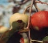

Gyümölcsös
Almamoly
Amerikai fehér szövőlepke
Barackmoly
Cseresznyelégy
Keleti gyümölcsmoly
Májusi cserebogár
Kaliforniai pajzstetű
Körtelevélbolha
Szilvamoly
Vértetű
Kiskert
A káposzta hernyókártevői
Burgonyabogár
Fonálférgek
Káposztapoloska
Keresztesvirágúak földibolhái
Lótücsök
Levéltetvek
Takácsatkák
Meztelen csigák
Üvegházi molytetű (lisztecske, fehérlégy)
 AlmamolyAmerikai
fehér szövőlepkeBarackmolyCseresznyelégyKeleti
gyümölcsmolyMájusi
cserebogárKaliforniai pajzstetűKörtelevélbolhaSzilvamolyVértetű
AlmamolyAmerikai
fehér szövőlepkeBarackmolyCseresznyelégyKeleti
gyümölcsmolyMájusi
cserebogárKaliforniai pajzstetűKörtelevélbolhaSzilvamolyVértetű